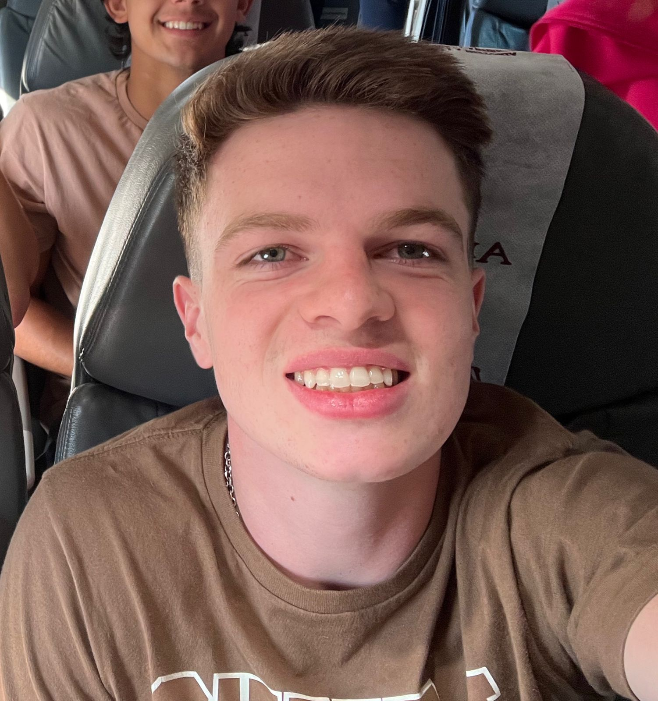

Autobiografía de Bautista del Cerro:
Estudiante de Ingeniería en Informatica
Mi nombre es Bautista del Cerro y nací el 12 de marzo de 2004 en
Resistencia, Chaco. Soy el mayor de tres hermanos y crecí en una familia
unida y dedicada. Desde una edad temprana, mostré interés por la
tecnología y la informática, lo que eventualmente me llevó a elegir la
ingeniería en informática como mi carrera. Mis primeros años de educación
los pasé en el Colegio Don Bosco, donde cursé toda la primaria y
secundaria. Durante este tiempo, cultivé amistades duraderas y adquirí
conocimientos que sentaron las bases para mi futuro académico y
profesional. Después de graduarme del colegio, decidí continuar mi
educación superior en la Universidad Argentina de la Empresa (UADE), donde
actualmente estoy cursando mi tercer año de ingeniería en informática.
Esta carrera me ha brindado la oportunidad de explorar mi pasión por la
tecnología en profundidad y me ha desafiado a crecer tanto académica como
personalmente. Además de mis estudios universitarios, también estoy
trabajando con mi padre en un servicio de cobranza llamado Servicios
Jurídicos SRL. Esta experiencia laboral me ha enseñado valiosas lecciones
sobre responsabilidad, trabajo en equipo y gestión del tiempo. Aunque a
veces puede ser desafiante equilibrar el trabajo y los estudios, estoy
agradecido por la oportunidad de adquirir experiencia práctica mientras
continúo mi formación académica.